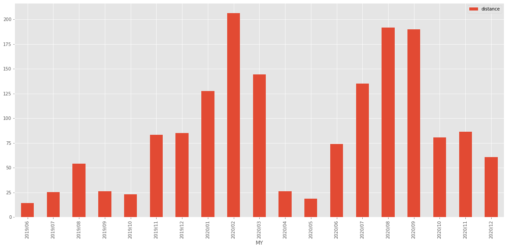
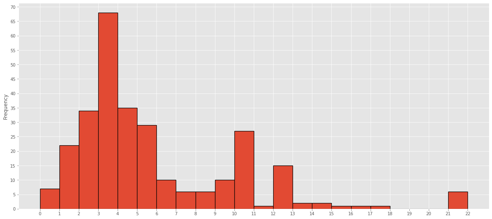
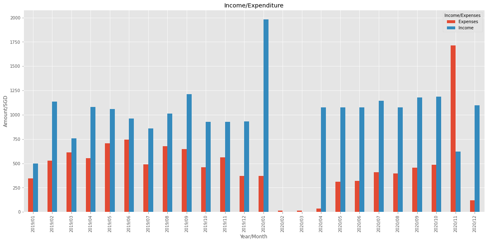
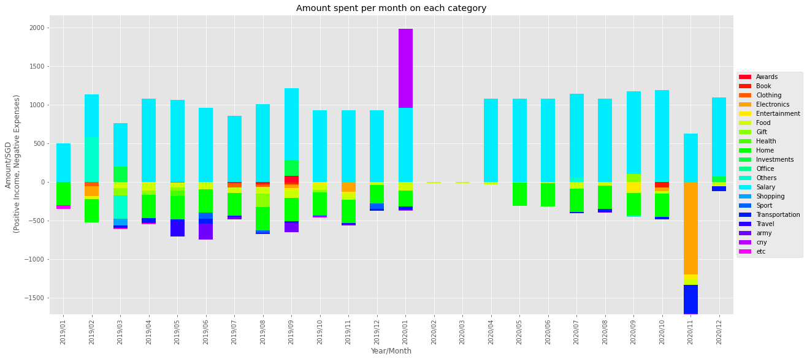

National Service
ORD lo
Making random stuff now
ORD lo
October 2018 was when I graduated from Hwa Chong Institution, and I would say that it was a bittersweet moment as on one hand, I was freed from the pressure and stress of examinations, albeit temporarily, and on the other hand, that was probably the last time I would be in a school environment with all my friends and teachers.
My team and I set off to Canada to battle it out with international competitors for the title of World Champions. Our team migrated to Arduino and stayed back after school for hours on end to learn the new programming language and syntax. It was a stressful yet fun time for me as there were many unexpected and anger-inducing problems along the way, but blasting music and working together with the company and help from my peers and juniors made it far more tolerable and fun for me. Unfortunately, we didn't do too well internationally as we faced immense competition, far stronger than our Singapore peers. However, our CCA got a confidence boost from our Singapore victory and started making bigger and better plans for the future.
My team and I participated in tne National RoboCup Competition in the Rescue Line category and outdid our competitors to clinch the championship title and gain a ticket to the International RoboCup Competition. It was an unxepected moment as most of my team was relatively new to this but we made a decision to put in our all for the next few months to prepare for Internationals
I enrolled in HCI in January 2017 after doing unexpectedly well in my O'Level examinations which turned out to be one of the best desicions of my life as I was able to meet certain people and have some unique experiences I probably wouldn't be able to had I chosen to go to another school. I got accepted into the Science and Math Talent Programme where I had some amazing teachers and met some extremely intellectually gifted yet humble people who were willing to lend a helping hand whenever possible. I entered the Hwa Chong Infocomm and Robotics Society where I met some unique and quirky personalities who were so passionate about their projects that it inspired me immensely as well. In this CCA, I was also able to get once-in-a-lifetime opportunities that I would not be able to get otherwise.
I graduated from BPGHS in 2016 after a long, fulfiling four years. Secondary school was a tough time for me but I've met a lot of people, both peers and teachers alike, who were more than willing to spend their precious time with me to help out whenever I faced problems.
https://www.randomwebsite.com/script.php?variable=value the 'variable' with value of 'value' will be saved into $_GET and we can access the variable.
This is then sent to the database with SQL through another php script.
Monthly run distance from Jun 2019 to Dec 2020
The y axis is distance in km,
Frequency of run distance from Jun 2019 to Dec 2020
The bins are categorized into a range of distances, for example the first bin is from 0 to 1km, second 1 to 2km and so on.
Comparing Income vs Expenditure
Comparison of Categories of Expenditure and Income
All the plots were made by exporting data as CSV and reading into python with pandas, then using Matplotlib to plot the data.